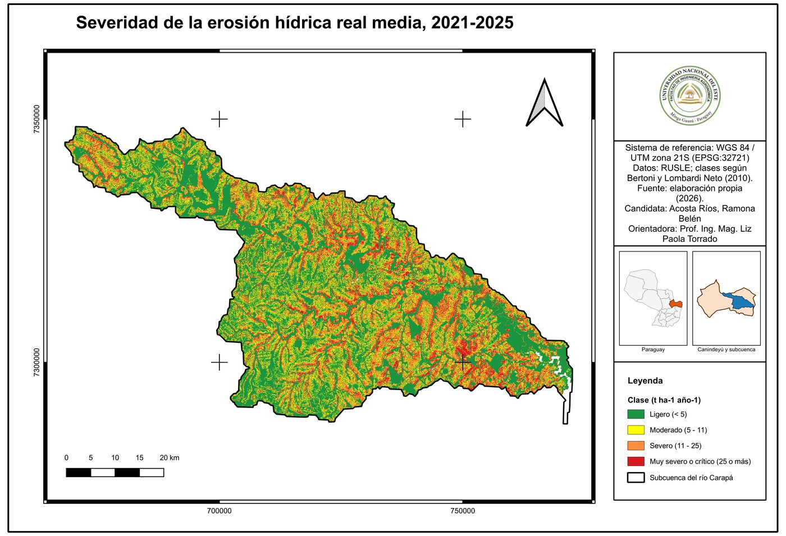
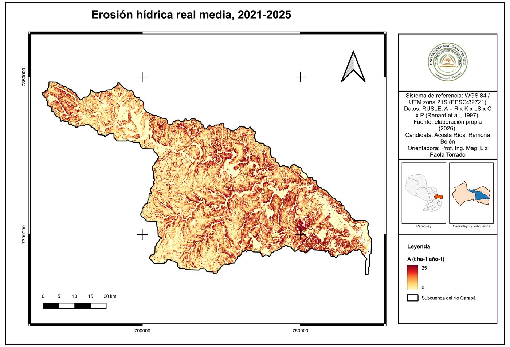
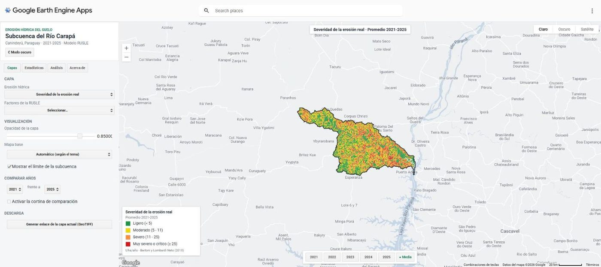
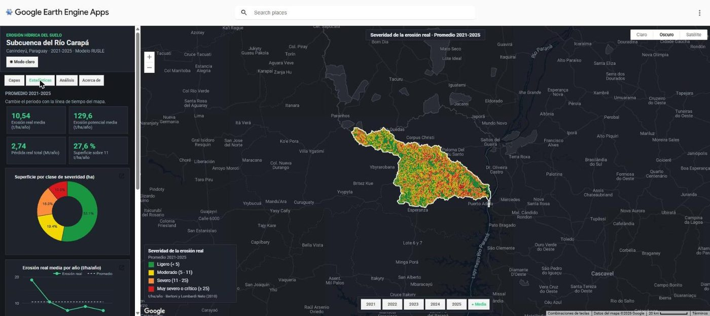
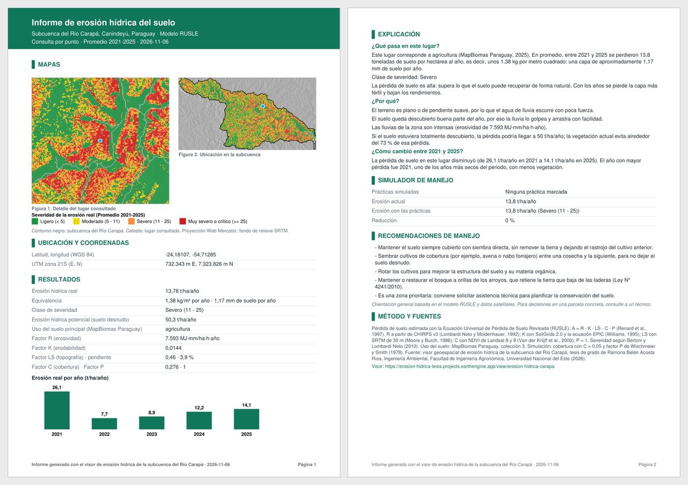

Visor interactivo
Haga clic en cualquier punto de la subcuenca para conocer la pérdida de suelo, su clase de severidad y una explicación sencilla de lo que significa y qué manejo se recomienda.
Si el visor no se carga aquí, ábralo en una pestaña nueva: erosion-hidrica-tesis.projects.earthengine.app
Resultados principales, 2021-2025
La subcuenca del Río Carapá abarca 2.675,8 km² en el departamento de Canindeyú. La pérdida de suelo se estimó con la Ecuación Universal de Pérdida de Suelo Revisada (RUSLE), A = R x K x LS x C x P, con datos satelitales de lluvia, suelo, relieve y cobertura vegetal.
Clases de severidad de la erosión
- Ligero: menos de 5 t/ha/año
- Moderado: 5 a 11
- Severo: 11 a 25
- Muy severo o crítico: 25 o más
Mapas


Qué permite hacer el visor
Capas y años
Erosión real y potencial, severidad y factores R, K, LS y C de cada año 2021-2025 o del promedio, con modo claro y oscuro.
Consulta por punto
Valores del lugar elegido, gráfico anual y una explicación en lenguaje sencillo con recomendaciones de manejo.
Análisis de un área
Dibuje una parcela y obtenga su erosión media, la superficie por clase de severidad y las toneladas de suelo perdidas.
Simulador de manejo
Estime cuánto bajaría la pérdida de suelo con cobertura permanente, curvas de nivel o terrazas.
Microcuencas prioritarias
Ranking de las 20 microcuencas de la subcuenca según su erosión media y superficie crítica.
Informes y datos
Informe en PDF con mapas y coordenadas de cada consulta, comparación de años y descarga de capas GeoTIFF con registro gratuito.
Capturas



Método y fuentes de datos
- Modelo
- RUSLE (Renard et al., 1997); clases de severidad según Bertoni y Lombardi Neto (2010).
- Factor R
- Lluvia CHIRPS v3, validada con la estación Saltos del Guairá; índice de Fournier modificado.
- Factor K
- SoilGrids 2.0 y ecuación EPIC (Williams, 1995).
- Factor LS
- Modelo de elevación SRTM de 30 m; Moore y Burch (1986), en QGIS 3.40.
- Factor C
- NDVI de Landsat 8 y 9; Van der Knijff et al. (2000).
- Verificación
- MODIS, MapBiomas Paraguay y GloRESatE.
- Plataforma
- Google Earth Engine y QGIS.